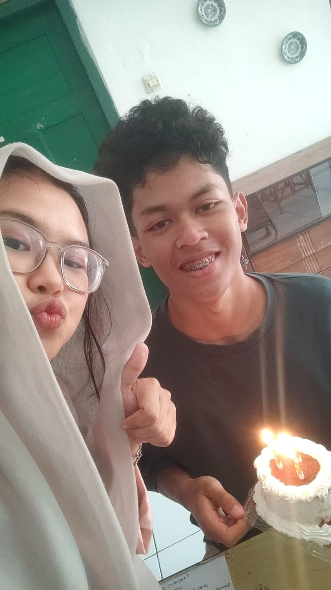
30 Juli 2023
18 Tahun🌟
Pertama kali merayakan ulang tahun alvaro yang super bingung dan masih kerasa canggungnya
👆 Klik kartu buat tau jawabannya!
Kapan aku lahir?
tap!30 Juli 2005
Leo penuh gairah 💛
Apa warna favoritku?
tap!Hijau
Hijau mencerminkan carvin
Makanan favoritku?
tap!Sate Al-Jihad
Sate ayam 20 tusuk, please!
Minuman favoritku?
tap!Teh
Kemanapun tempatnya, teh solusinya!
Hobiku apa?
tap!Tidur
Merem dimanapun kamu berada
Kenapa aku tetap milih kamu?
tap!Be Yourself
Menerima apa adanya, dan garepot!
Hal-hal keren yang udah kamu capai ditahun ini
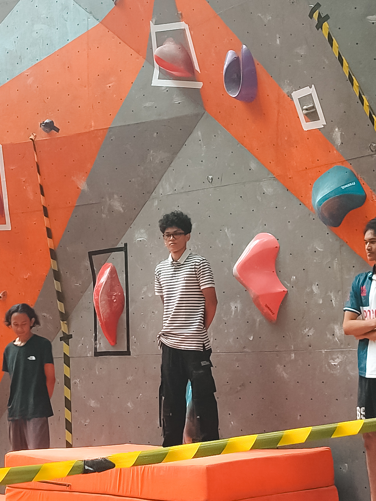
Juara 1 Manjat BFF
Setelah 3 tahun ikut lomba manjat ini, akhirnyaaa juara 1 dengan sangat mudah. Membuktikan alvaro pantang menyerah, KEREN!
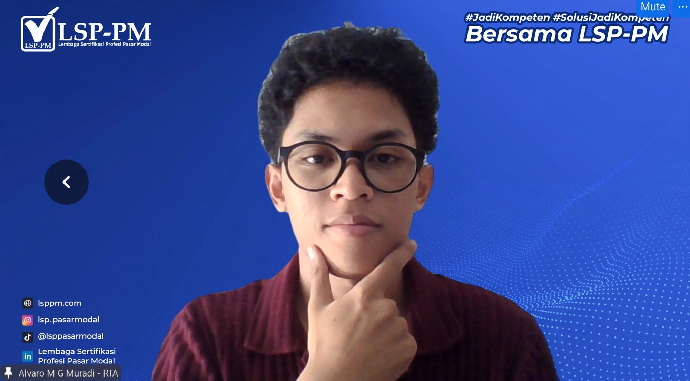
Alvaro Medina Guntara Muradi, RTA®
Proses dari hasil belajar dan mengulik, berhasil dapet gelar sebelum lulus kuliah. Mantap!
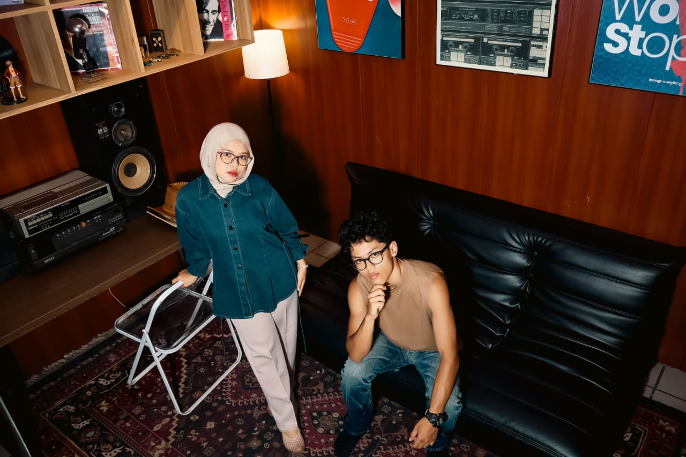
BEST BF EVER
Top 1 pasangan terbaik saski hari ini dan selamanya. Semoga bisa menjadi partner seumur hidup sampai punya anak cucu cicit dan bahagia selalu. Aamin
Tentang 30 Juli, sejak tahun 2023

Pertama kali merayakan ulang tahun alvaro yang super bingung dan masih kerasa canggungnya
Tahun ini,kedua kalinya ngerayain bareng. Tapi kamu pergi sama reog boys itu ke garut untuk berendam. Terus, aku lupa kita ngapain aja
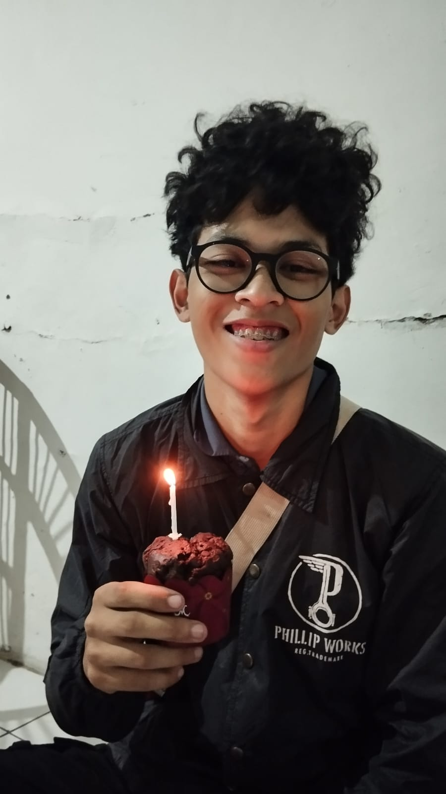
Ulang tahun yang gagal surprise... betenya ada banget sudah effort dan malah berantem dimobil. Yap, tapi akhirnya kita berdamai dan tiup lilin dengan senyuman
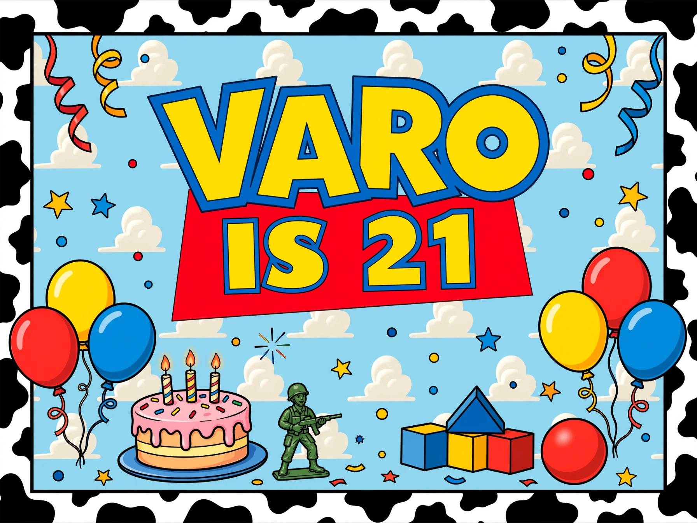
Yash, hari ini kamu 21 tahun dan lambaran baru siap dimulai! Semoga lembaran ini bisa diisi hal - hal yang menyenangkan yaa❤️
📽️ Foto dan ceritanya
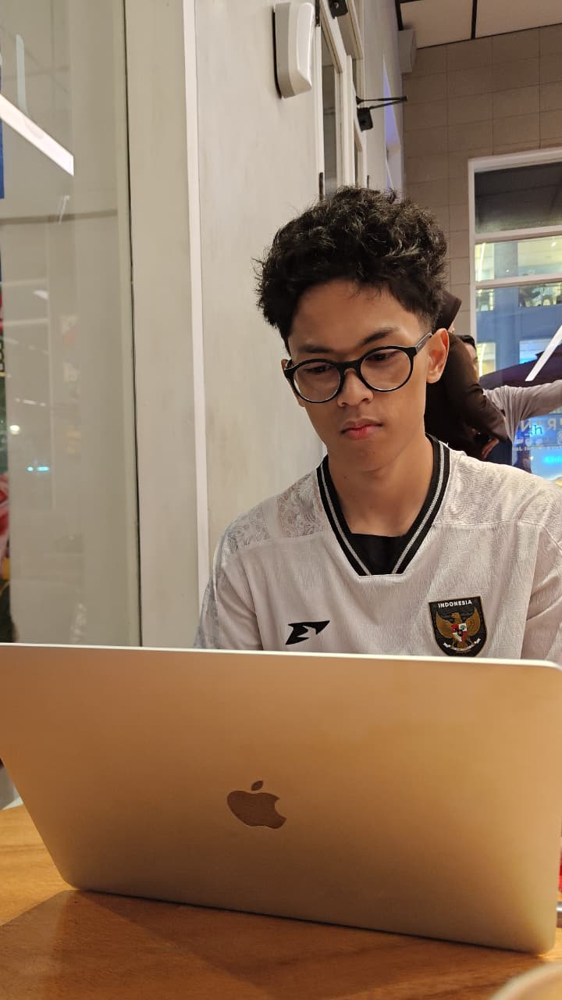
Siapa ini gantenggg bgt baju putih dan baru cukurr ❤️
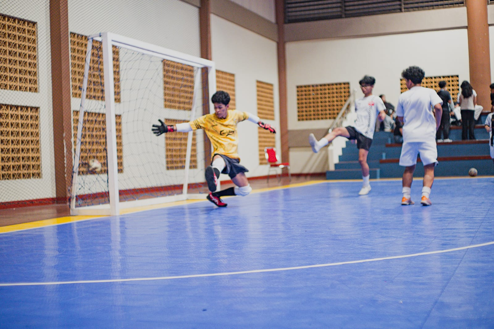
Tanding bola setelah berolahraga extra
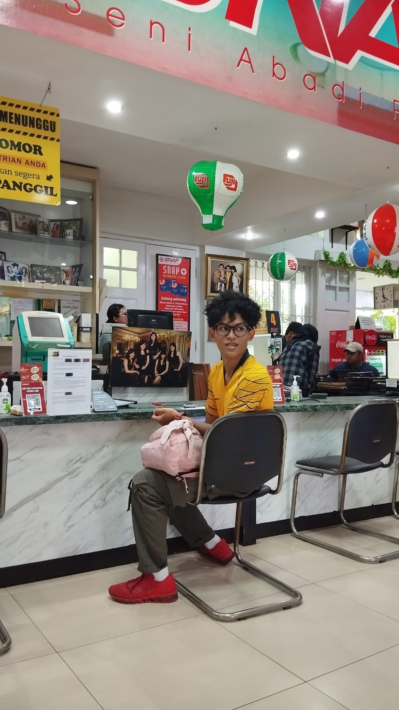
Varo dengan outfit lampu merah
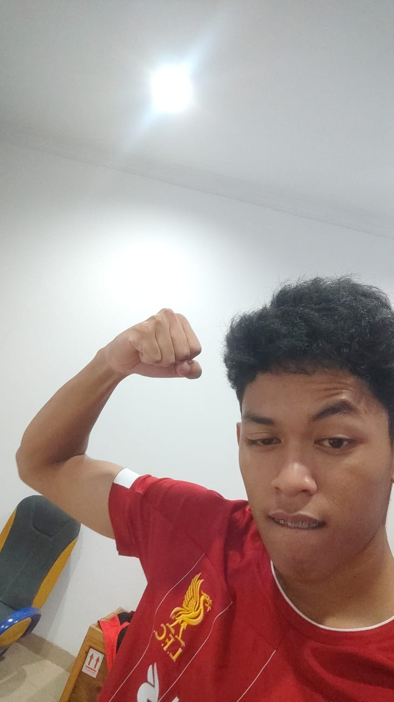
Masih berandai-andai punya otot good
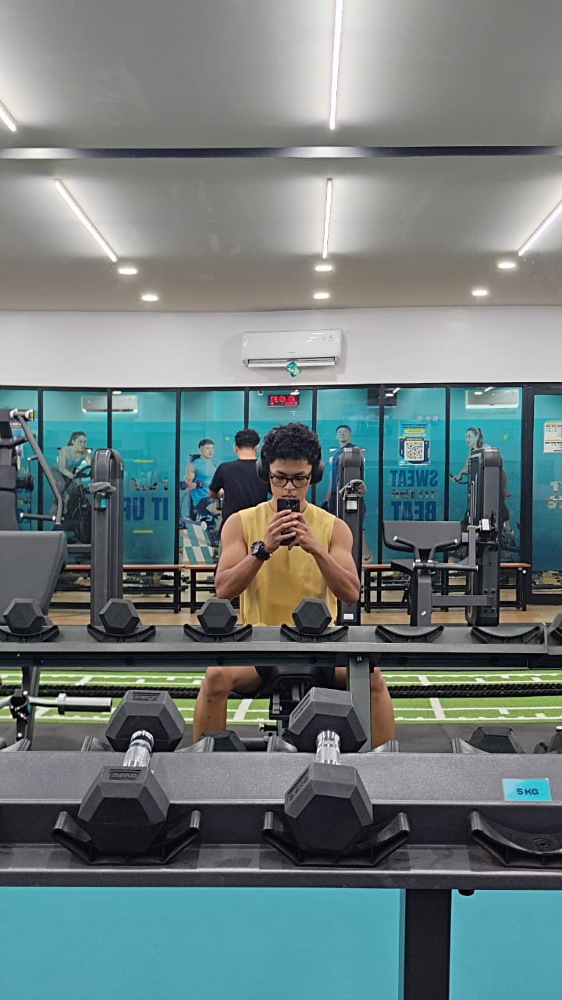
Gym untuk tangan hulk
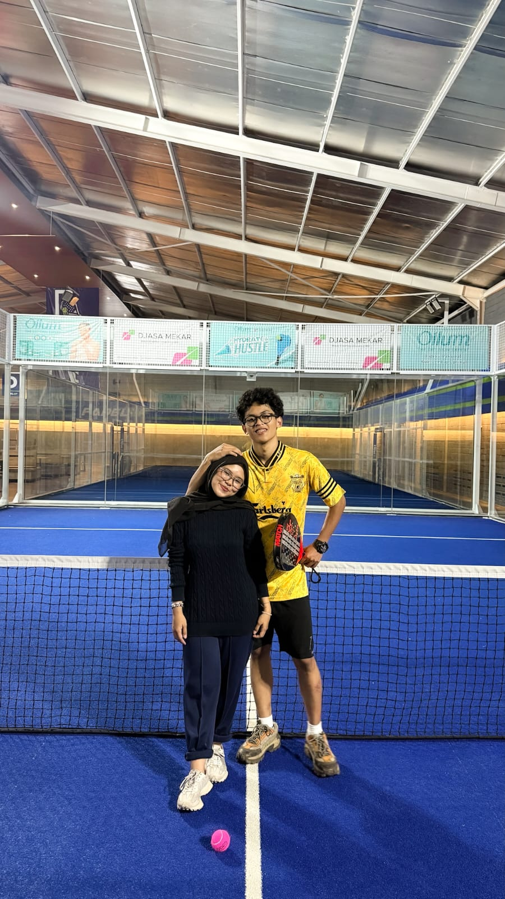
Mencoba olahraga fomo
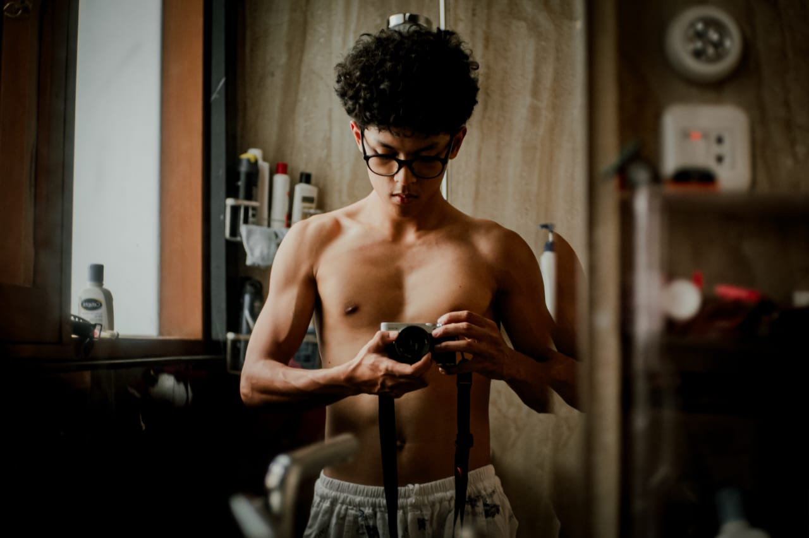
My Deputy, Atot🤠
Apa tema kali ini?
Open Me for a Surprise!
Pertama, celana!👖. Karna celana kamu udah pada kekecilan, jadi aku kasih celana yang style nya beda dari biasanya. Bukan lagi cargo ataupun jeans, tapi work pants double knee yang terlihat seperti anak skena.
Kedua, baju!👕. Karena kamu gapunya baju hitam, jadi terciptalah polo hitam ini biar bisa kamu pake kuliah yeay. Semangat menjadi mahasiswa akhir yang kekampus tiap hari ya!
Ketiga, sendal!🩴. Karena akhir-akhir ini kamu sering pake sendal, kita ubah sendal KKN itu jadi sendal warna deep olive sesuai warna favorit kamu
Terakhir, kue bricks!. Supaya kuenya awet, jadi kuenya aku kasih ini, dibuat dengan penuh effort dan sepenuh cinta lov u ❤️
For My Favorite Deputy ❤️
Halo, Medina!. Cie 21 tahun, seumuran kita sekarang stop bilang aku tuaa 🎂
Semoga panjang umur, sehat selalu, makin rajin dalam segala hal, dimudahkan rezekinya, makin sayang sama keluarga, makin sayang juga sama aku, selalu dikelilingin orang" baik dan sayang sama kamu, dan makin sukses kedepannya. Semoga cita-cita yang belum tercapai bisa terwujud satu persatu ditahun ini, aamiin. Semoga apa yang terjadi sama kamu, bisa jadi pelajaran buat kedepannya.
Terimakasih ya med sudah bertahan sampai sejauh ini. Terimakasih juga udah jadi orang yang super duper membanggakan. Terimakasih udah jadi pasangan yang baik, bukan cuma buat aku aja, tapi bisa jadi anak laki" papa yang bisa diandalkan.Terimakasih sudah mau berbagi cerita, seneng, sedih, marah, kesel dan semua ekspresi sama aku. Terus jadi alvaro yang aku kenal yaa, medd.
Terharu banget 4 tahun rayain ulang tahunnya bareng, semoga hal ini bisa terus berlanjut selamanya ya medina. Dan semoga aku bisa selalu ada buat kamu, nemenin kamu dari yang kamu pengen, bantuin kamu dari kamu butuh, support kamu dari yang kamu mau. Semoga mimpi, doa dan harapan kita bisa terwujud semua, aamiin. Sekali lagi, happy birthday medinaaa lovvv uuu ❤️
21